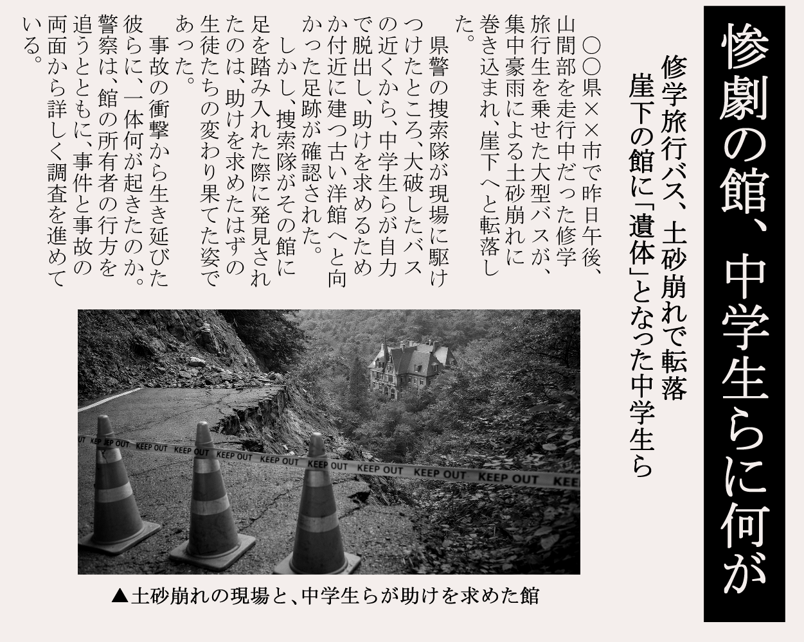
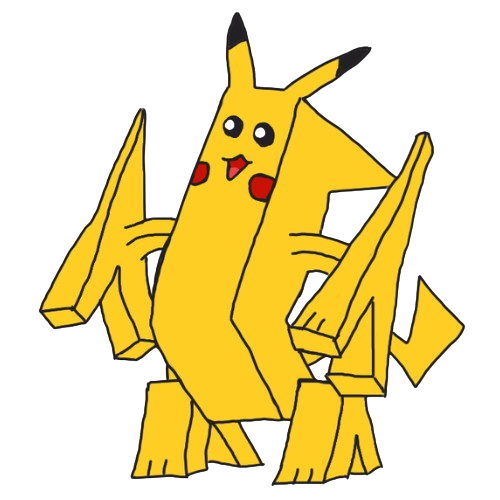
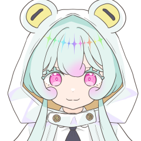
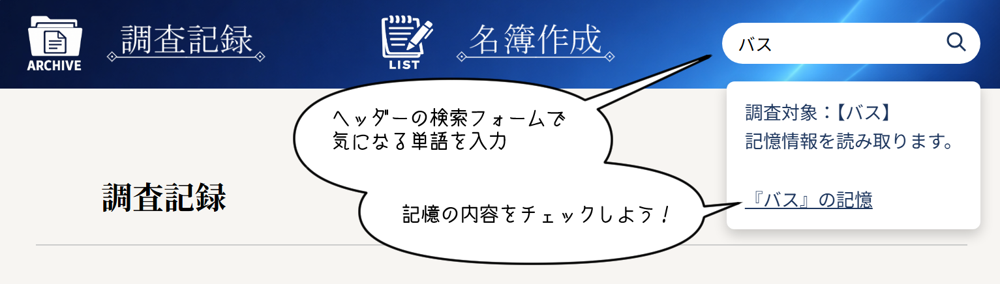
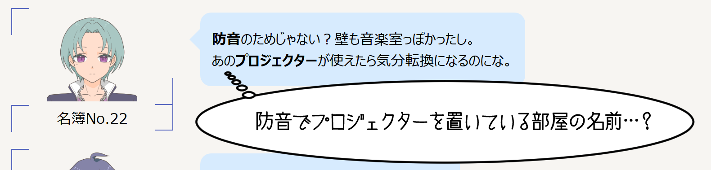
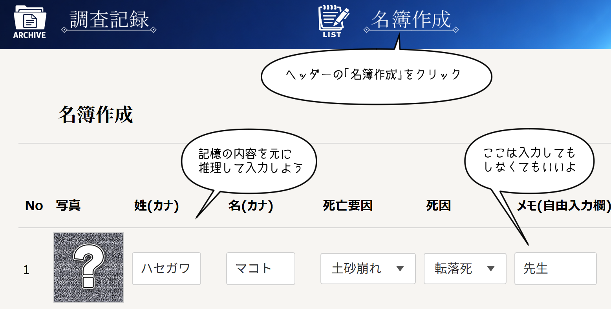
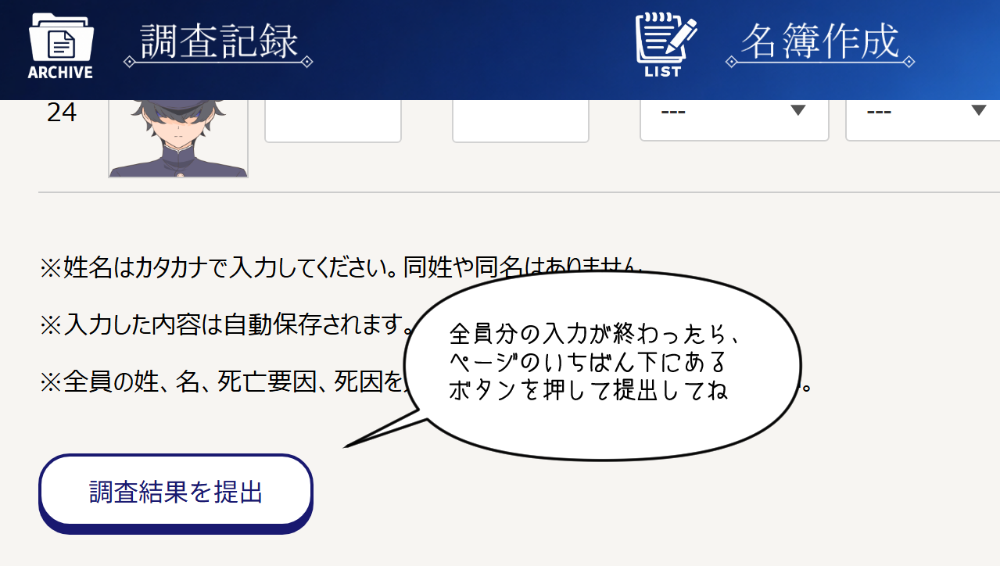
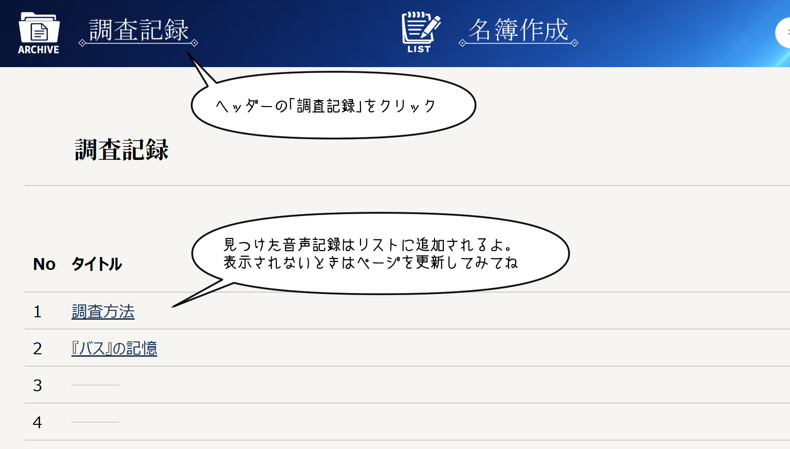
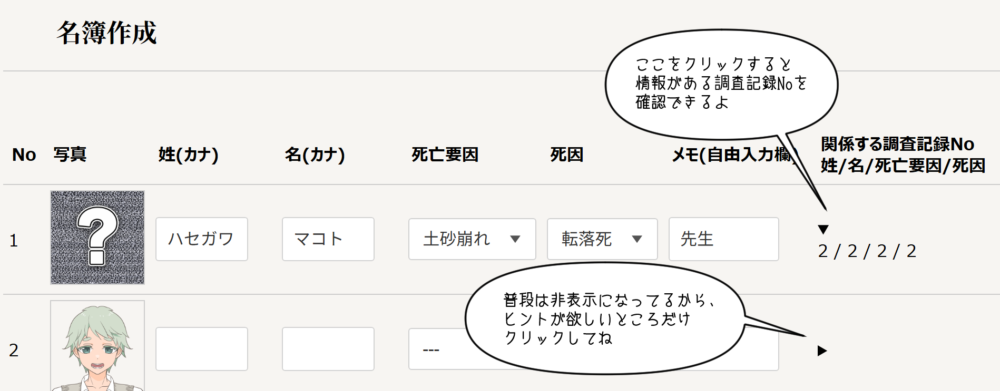
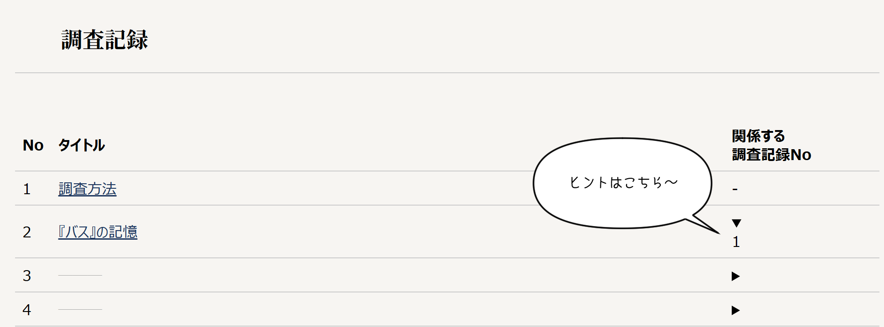

繝医Ξ繝ｼ繧ｵ繝ｼ
ちなみにこの新聞は嘘だよ☆ 生存者は9人だよ☆

パラレルワールド
こんにちは！ 今回、あなたにお願いしたいのは、この記事に載っている未解決事件の調査だよ。
サイコメトリー
事件の概要を説明するっす。 修学旅行中の中学生を乗せたバスが、山で土砂崩れに遭ったっす。 崖の下で生き延びた彼らは、近くにある館へ助けを求めに行ったみたいっすね。 でも、館で見つかったのは彼らの死体だけだったっす。
あなたにやってほしいことは2つ。 「情報検索」と「名簿作成」だよ。
あたしは、物質から音声記憶を読み取る超能力【サイコメトリー】を持ってるっす。 その能力を使って読み取った音声記憶を、このWebサイトに記録してるっす。 記録をリスト化すると２万以上ものリンク先を調べてもらう、なんてことになるんで、 調査に関係しそうな情報は検索して見つけてくださいっす。 「館の各部屋」や「死亡時傍にあったもの」あたりがヒットしやすいと思うっす。

それっぽい情報はあるけど、肝心のワードが見つからない… なんてときは、Google検索で調べてみてくださいっす。

次は、事故に遭ったバスに乗車していた人たちの名簿を作成してほしい。 名簿に必要な情報は「氏名」、「死因」、それから「死亡要因」。 「氏名」と「死因」は通常の捜査で判明してるけど、 超能力の正確性を担保するために、私たちには明かされていないの。 「死亡要因」っていうのは、 「死に関与した人物・現象」 または「故意に死亡させる行動を誘導した人物」 のことだよ。 調査記録をよく読んで、名簿を完成させてね。


一度見た調査記録は、「調査記録」ページで再確認できるっす。

あと、私の超能力、別の世界線のあなたにあったことを知覚する【パラレルワールド】を使って 必要な情報がありそうな調査記録はどれかを確認できるよ。


「事件を解決した世界線」に収束させるために、 あなたには自力でこの事件を解決してもらう必要があるの。 私たちも超能力捜査官としてサポートしていくから、事件解決まで頑張ろうね！